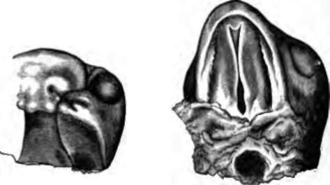
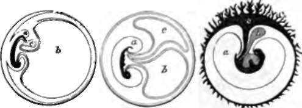

212. The Process Of Separation Of The Embryo From The Rest Of The Ovum
Description
This section is from the book "Animal Physiology: The Structure And Functions Of The Human Body", by John Cleland. Also available from Amazon: Animal Physiology, the Structure and Functions of the Human Body.
212. The Process Of Separation Of The Embryo From The Rest Of The Ovum
The Process Of Separation Of The Embryo From The Rest Of The Ovum, so as to complete its visceral walls, is effected by the folding-in of the layers at the sides, by the prolongation backwards of the folding-in which has been spoken of as occurring in the head, and by a similar folding-forwards at the pelvic end of the body, until at last the neck of communication of the embryo with the rest of the ovum is narrowed to the navel, where the vessels of the allantois pass in and out.
Fig. 155. Development or the Palate in the Embryo Lamb, in two stages more advanced than that exhibited in the previous figure. From drawings by Professor Dickson.
By this means both the cylinder of the visceral walls and that of the alimentary tube are completed. For a time the remains of the yelk sac continue connected with the alimentary tube, which projects in a loop at the navel from the completed wall of the abdomen, and they go by the name of the umbilical vesicle, while the pedicle of connection is called the vitelline duct; it is not, however, a hollow pedicle; and even in those classes of animals which have large yelk sacs, the contents do not pass into the alimentary canal, but are absorbed by the blood-vessels round it, for the nourishment of the young animal. The place where the vitelline duct is attached to the intestine, is near the lower end of the ileum.
As the walls of the embryo become folded in, the outer layer of the germinal membrane, which is gradually expand ing, and removed from the inner layer or yelk sac by an increasing amount of fluid, rises up round the whole embryo, as it has previously risen round the head; and thus the embryo is dipped into a deepening hollow, and at last the entrance into the hollow becomes narrowed and obliterated above the dorsum of the embryo, and the embryo is completely enveloped in a sac, which is filled with fluid, and is called the amnion. The part of the outer layer of the germinal membrane beyond the amnion becomes incorporated with the chorion. The amnion continues, till birth, as a perfectly transparent membrane filled with clear liquor amnii, in which the foetus lies.
Fig. 150. Faetal Connections: diagram, a, Sac of the amnion; b yelk sac; c, allantois becoming developed into the faetal part of the placenta.
213. We have still to consider the development of the vascular system. The first traces of embryonic blood-vessels seem to make their appearance external to the embryo, in the opaque border of the clear area which surrounds it. Here there is a circular vena terminalis, and a development of blood-corpuscles. A network of vessels springs up over the clear area, and the blood is brought to the embryonic heart by two trunks, which enter the embryo transversely, one on each side, the omphalo-mesenteric veins. The circular vena terminalis advances on the inner layer of the germinal membrane, until the network of vessels of which it forms the limit, the omphalo-mesenteric system, surrounds the whole yelk sac. This is the earliest system of blood-vessels for the nourishment of the embryo; and in the eggs of oviparous animals, which are comparatively large, it is of great importance in absorbing the yelk as nourishment. But in mammals, we have seen that the ovum is minute, and grows by nourishment drawn from the mother; and it seems probable that in them the omphalo-mesenteric vessels absorb from other sources besides the contents of the yelk sac.
Continue to: